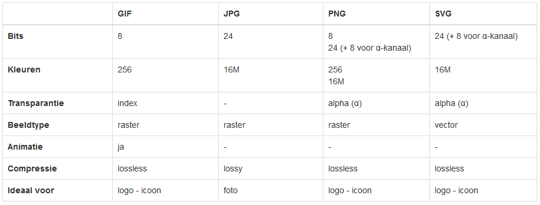

Working correctly with images
Image with few colours (logo, icon, ...)
GIF
3kB versus 8kB
PNG
2kB versus 5kB
JPG
2kB versus 8kB
SVG
3kB
Image with many colours (photo)
flower_jpg_80.jpg (27 kB)
flower_png_32.png (264 kB)
flower_png_8.png (45 kB)
Overview

Comparison GIF - JPG - PNG - SVG